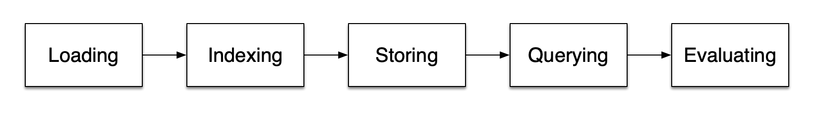

Introduction to RAG
Tip
If you haven't, install LlamaIndex and complete the starter tutorial before you read this. It will help ground these steps in your experience.
LLMs are trained on enormous bodies of data but they aren't trained on your data. Retrieval-Augmented Generation (RAG) solves this problem by adding your data to the data LLMs already have access to. You will see references to RAG frequently in this documentation. Query engines, chat engines and agents often use RAG to complete their tasks.
In RAG, your data is loaded and prepared for queries or "indexed". User queries act on the index, which filters your data down to the most relevant context. This context and your query then go to the LLM along with a prompt, and the LLM provides a response.
Even if what you're building is a chatbot or an agent, you'll want to know RAG techniques for getting data into your application.

Stages within RAG#
There are five key stages within RAG, which in turn will be a part of most larger applications you build. These are:
-
Loading: this refers to getting your data from where it lives -- whether it's text files, PDFs, another website, a database, or an API -- into your workflow. LlamaHub provides hundreds of connectors to choose from.
-
Indexing: this means creating a data structure that allows for querying the data. For LLMs this nearly always means creating
vector embeddings, numerical representations of the meaning of your data, as well as numerous other metadata strategies to make it easy to accurately find contextually relevant data. -
Storing: once your data is indexed you will almost always want to store your index, as well as other metadata, to avoid having to re-index it.
-
Querying: for any given indexing strategy there are many ways you can utilize LLMs and LlamaIndex data structures to query, including sub-queries, multi-step queries and hybrid strategies.
-
Evaluation: a critical step in any flow is checking how effective it is relative to other strategies, or when you make changes. Evaluation provides objective measures of how accurate, faithful and fast your responses to queries are.

Important concepts within RAG#
There are also some terms you'll encounter that refer to steps within each of these stages.
Loading stage#
Nodes and Documents: A Document is a container around any data source - for instance, a PDF, an API output, or retrieve data from a database. A Node is the atomic unit of data in LlamaIndex and represents a "chunk" of a source Document. Nodes have metadata that relate them to the document they are in and to other nodes.
Connectors:
A data connector (often called a Reader) ingests data from different data sources and data formats into Documents and Nodes.
Indexing Stage#
Indexes:
Once you've ingested your data, LlamaIndex will help you index the data into a structure that's easy to retrieve. This usually involves generating vector embeddings which are stored in a specialized database called a vector store. Indexes can also store a variety of metadata about your data.
Embeddings: LLMs generate numerical representations of data called embeddings. When filtering your data for relevance, LlamaIndex will convert queries into embeddings, and your vector store will find data that is numerically similar to the embedding of your query.
Querying Stage#
Retrievers: A retriever defines how to efficiently retrieve relevant context from an index when given a query. Your retrieval strategy is key to the relevancy of the data retrieved and the efficiency with which it's done.
Routers:
A router determines which retriever will be used to retrieve relevant context from the knowledge base. More specifically, the RouterRetriever class, is responsible for selecting one or multiple candidate retrievers to execute a query. They use a selector to choose the best option based on each candidate's metadata and the query.
Node Postprocessors: A node postprocessor takes in a set of retrieved nodes and applies transformations, filtering, or re-ranking logic to them.
Response Synthesizers: A response synthesizer generates a response from an LLM, using a user query and a given set of retrieved text chunks.